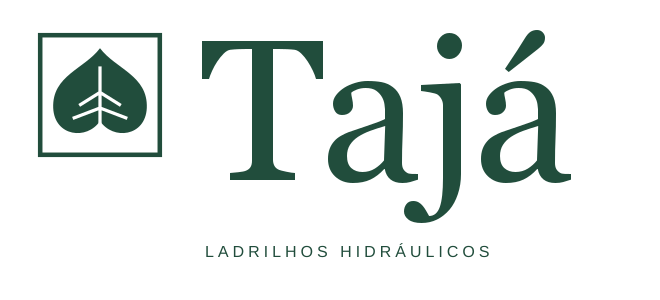
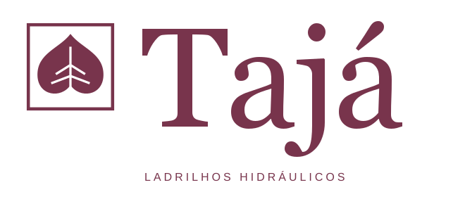
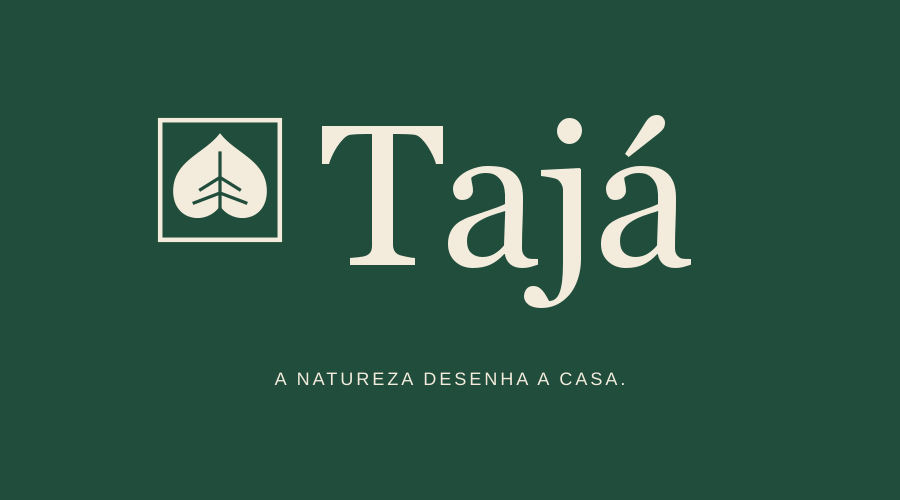
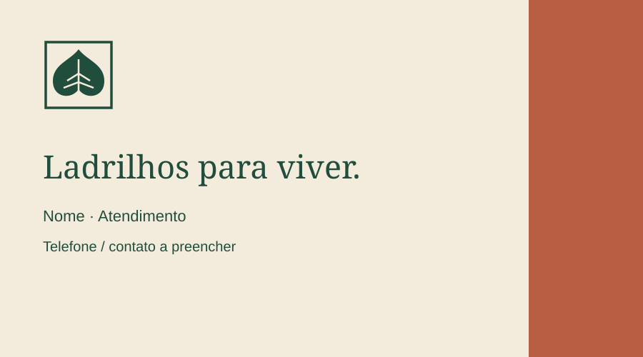
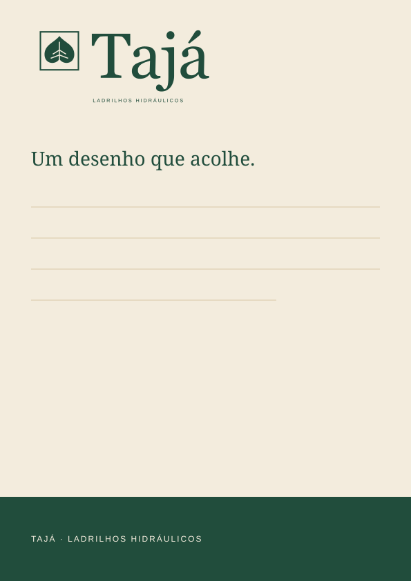
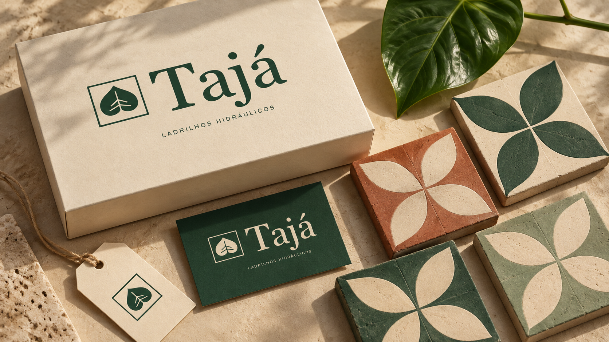

Identidade visual · revisão 02 / 2026
A natureza
desenha a casa.
Tajá é uma loja de ladrilhos hidráulicos com uma linguagem que aproxima o desenho botânico, a matéria e a arquitetura. Uma marca acolhedora, tátil e precisa.
Conceito de marca: natureza em módulos.
01 / Essência e assinatura
Uma folha.
Um ladrilho.
Um novo desenho.
O símbolo parte de uma folha ampla, com recorte inferior e nervura central, e a inscreve em uma moldura quadrada. A folha traz a natureza; o quadrado traz o módulo do piso. O logotipo serifado dá à marca uma presença editorial e aproxima tradição e desenho contemporâneo.
Assinatura: A natureza desenha a casa.
Posicionamento proposto: ladrilhos com expressão botânica para quem quer construir espaços com personalidade, dirigidos a moradores, arquitetos e designers de interiores.


02 / Cor e matéria
Verde de folha.
Rosa de nervura.
A paleta cresce sem perder suas raízes. Verde tajá e cal continuam como base; rosa folha abre uma nova expressão botânica. Vinho nervura cria contraste e verde lima traz luz. Argila, sálvia e areia preservam a relação com a matéria.
Verde e vinho funcionam sobre rosa. Cal funciona sobre verde e vinho. Lima é um acento gráfico, não uma cor para texto em fundo claro. Proporções orientam peças institucionais; não são uma regra para os produtos. CMYK é uma conversão aproximada: a gráfica deve ajustar ao perfil e ao papel. Use carvão ou verde sobre cal para textos; mantenha sálvia e areia em áreas gráficas.
03 / Tipografia
Georgia
Serifada para títulos e frases de campanha. Regular, com entrelinha de 105–115%, em composições curtas e generosas. O logotipo fornecido possui o nome convertido em curvas.
Arial
Regular para textos; Bold para informação e identificação de produtos. Entrelinha de 150–170%. Em textos digitais, começar em 16 px. Os arquivos de fonte não são distribuídos neste kit.
O descritor “LADRILHOS HIDRÁULICOS” permanece como texto editável nos SVGs e usa Arial. Antes de enviar à produção, converta esse descritor em curvas no editor vetorial.
04 / Sistema gráfico
A folha vira ritmo.

Jardim modular
Curvas espelhadas se encontram no centro de cada módulo. A repetição cria um jardim geométrico para embalagens, papel de seda, fundos de campanha e detalhes de sinalização.
Use o padrão em faixas ou em superfícies amplas. Reserve uma área lisa para o logo e para a leitura. O padrão é um grafismo de marca; uma linha de ladrilhos com esse desenho dependerá de desenvolvimento técnico.
Direção de fotografia
Luz lateral natural, superfícies foscas, enquadramentos de detalhe, plantas como presença secundária e ambientes vividos. Mostrar textura e desenho sem saturação excessiva ou filtros verdes.
05 / Regras de uso

Respiro
Mantenha uma margem livre de ao menos ¼ da largura do símbolo em todos os lados. Logo sobre fundo liso ou fotografia com baixa informação.
Tamanho mínimo
Logo com descritor: 220 px em telas ou 45 mm em impressão. Abaixo disso, use símbolo ou logotipo sem descritor. Símbolo: mínimo de 32 px ou 8 mm.
Versões
Verde em fundos claros. Cal em fundos escuros. Preto para reprodução em uma cor. Terracota como alternativa em peças de campanha.
Integridade
Preserve proporções, acento e composição. Evite contornos adicionais, sombras no logo, rotação, cores fora da paleta e fundos que escondam as nervuras.
Tom de voz
Sensorial, próximo e claro. Fale de textura, encontro, desenho e casa. “Um desenho que acolhe.” “Da folha ao piso.” Evite promessas técnicas ou de fabricação sem comprovação.
06 / A marca em uso
Do primeiro contato
ao espaço construído.


Cartão institucional · composição de 90 × 50 mm.
AMOSTRA DE LADRILHO
Modelo: __________
Cor: _____________
Lote: _____________
Etiqueta de amostra · identificação simples, fundo cal.
A natureza
desenha
a casa.
LADRILHOS HIDRÁULICOS
Direção para redes sociais · contraste e frase curta.

Papelaria · logo, espaço de escrita e faixa verde.

Visualização ilustrativa gerada por IA. Para produção, os arquivos vetoriais fornecidos são a referência da marca.
07 / Kit de marca
Pronto para explorar.
Logos, símbolo, padrão e aplicações em SVG editável; versões PNG em alta resolução; paleta em JSON; e este guia visual. Os desenhos de aplicação são modelos e precisam receber os dados comerciais finais.


Clique em um código de cor para copiá-lo.